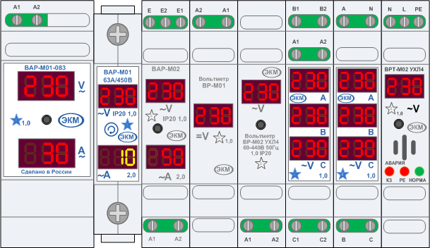
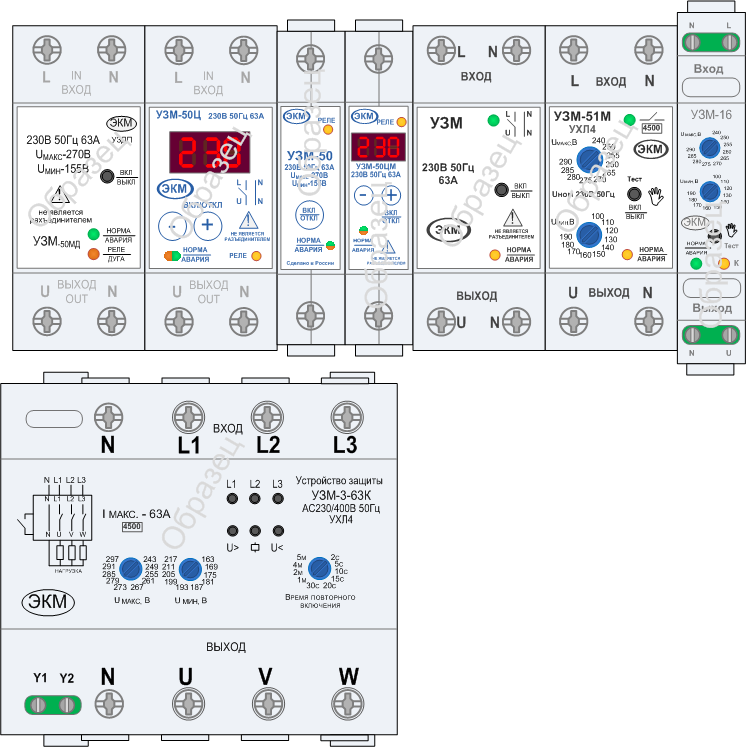
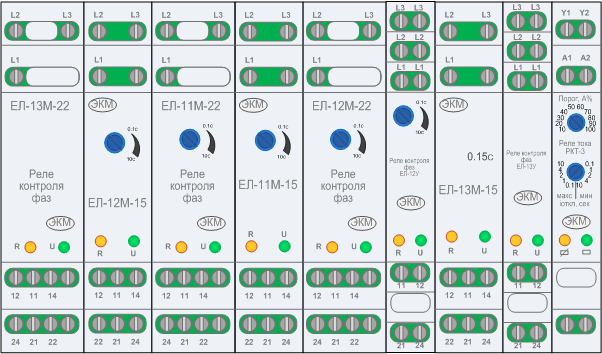

Для начала представлены два трафарета с оборудованием, устанавливаемым на DIN рейку:
MEANDR-UZM.vss - Вольтметры и амперметры,
MEANDR-VA.vss - Устройства защиты от скачков напряжения.

Состав трафарета "Вольтметры и амперметры":
- Вольтметр/Амперметр ВАР-М01
- Вольтметр/Амперметр ВАР-М01-083
- Вольтметр/Амперметр ВАР-М02
- ВР-М01 (для работы с постоянным током)
- ВР-М02
- Вольтметр ВР-М03 и ВР-М03-1
- Измеритель тока короткого замыкания и сопротивления цепи фаза-ноль сети ВРТ-М02 с функцией вольтметра

Состав трафарета "Устройства защиты от скачков напряжения":
- УЗМ-50МД
- УЗМ-50
- УЗМ-50Ц
- УЗМ-50ЦМ
- УЗМ-51М
- УЗМ-50М
- УЗМ-16
- УЗМ-3-63К
Вероятно, в дальнейшем можно ожидать пополнение ассортимента таких трафаретов. Но не обязательно. Все зависит от проявляемого интереса. Повлиять на дальнейшее развитие можно путем комментирования уже выложенного и рекомендаций по очередности реализации отсутствующего. Если никому не интересно, то и развития не будет.
Сегодня пополнение. Добавлены: реле контроля линейного напряжения и реле времени.
Состав трафарета реле контроля линейного напряжения - MEANDR-EL.VSS:
- EL-12M-15
- EL-11M-22
- EL-11M-15
- EL-12M-22
- EL-12U
- EL-13M-15
- EL-13M-22
- EL-13U
- RKT-3

Состав трафарета реле времени - MEANDR-RVO.VSS:
- RVO-1M
- RVO-P2-15
- RVO-P3-22
- RVO-P3-08
- RVO-P3-081
- RVO-08
- RVO-083
- RVO-P2-M-15
- RVO-P2-C5-15
- RVO-26M
- RVO-26